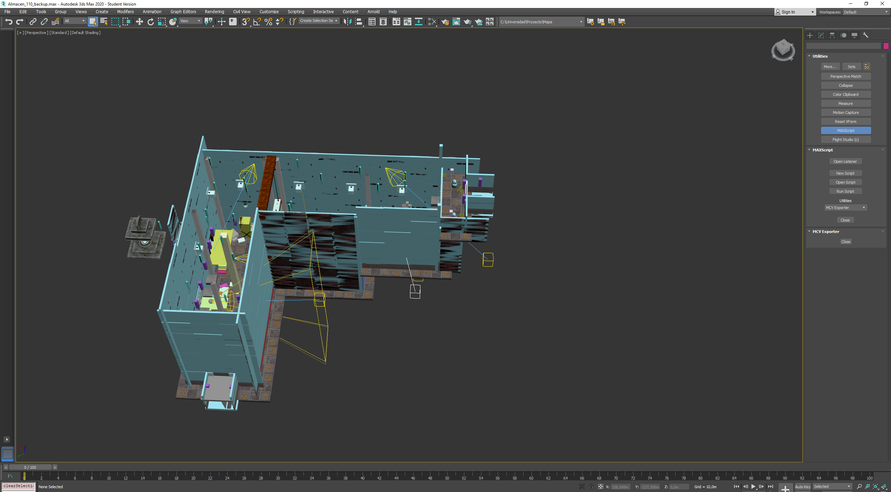

Map Exporter
 I was one of the people in charge of the Map exporter, from 3ds Max to the engine. The exporter was made using maxscript and it creates binary information for the geometry and a json for the entities, including material, properties, etc, on the scene.
The idea of the exporter was to put as much parametrization as possible on the exported map itself so it could be easily overwriten and modified. The map contained the logic and hieracy of the entities, the physics shapes attached to it and the filters each one had, the components it contained, etc.
Some visual options were programmed as well, to make it easier for the artists to use it.
Scripting
When we were still building the engine, we decided to implement LUA to the game as a scripting language.
I was the person in charge of the LUA implementation on the engine and I programmed its first few functions. However, due to the artist being full with the art itself and the programmers not being comfortable with the language, we ended up underutilizing it.